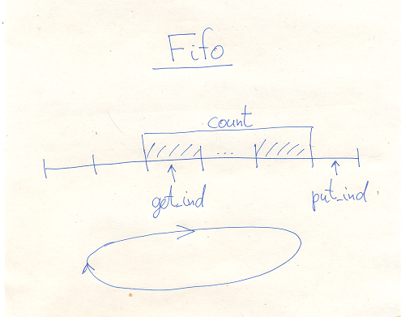

Files CCore/inc/Fifo.h CCore/src/Fifo.cpp
The Partial class Fifo implements a buffer fifo upon a provided buffer.

template <class T>
class Fifo : NoCopy
{
T *const buf;
const ulen len;
ulen put_ind;
ulen get_ind;
ulen count;
public:
Fifo(T *buf,ulen len);
ulen getCount() const { return count; }
bool isEmpty() const { return count==0; }
bool isFull() const { return count==len; }
void reset();
// put
template <class Func>
bool put_gen(Func func);
bool put(const T &obj);
bool put_swap(T &obj);
// get
template <class Func>
bool get_gen(Func func);
bool get(T &obj);
bool get_swap(T &obj);
};
Constructor builds a fifo in the initial empty state, the provided buffer will be used in subsequent operations.
getCount() returns the number of elements in the fifo.
isEmpty() returns true, iff the fifo is empty.
isFull() returns true, iff the fifo is full.
reset() resets fifo in the initial state.
Keep in mind, that the buffer is not just a memory space. It is the object array. Some of these objects are the logical part of the fifo, but others are unused. It is nothing, if the type T is int or any Small Data Type, but it would lead to a resource leak, if T is the String, for example. To deal with this problem, choose carefully an exact method of putting/getting objects into the fifo.
Putting/getting methods returns true, if the operation was successful, otherwise they return false and does not change the state of the fifo.
put() puts the object into the fifo, using copying.
put_swap() puts the object into the fifo, using swapping. I.g. it swaps the given object with the target buffer element.
put_gen() is a generic way to put an object into the fifo, its argument is a functor, which is called to do the job. func is called as func(dst), where dst is a target buffer element. It is assumed, this call will change this element to store a required value.
get() gets the object from the fifo, using copying. The copy of the object remains in the buffer.
get_swap() gets the object from the fifo, using swapping. This method is preferred, if you want to clean the object in the buffer, or if the type T is not copyable.
get_gen() is a generic method of extraction an object from the fifo, it calls the given functor func to do the job, the same way as the put_gen() does.
The class FifoBuf is an upgraded class Fifo with the embedded buffer:
template <class T,ulen Len>
class FifoBuf : public Fifo<T>
{
T buf[Len];
public:
FifoBuf() : Fifo<T>(buf,Len) {}
~FifoBuf() {}
};
Here is an example of the String fifo class:
class StringFifo
{
FifoBuf<String,100> fifo;
public:
StringFifo() {}
~StringFifo() {}
void put(const String &obj)
{
if( !fifo.put(obj) )
{
// throw exception, for example
}
}
String get()
{
String ret;
if( !fifo.get_swap(ret) )
{
// throw exception, for example
}
return ret;
}
};